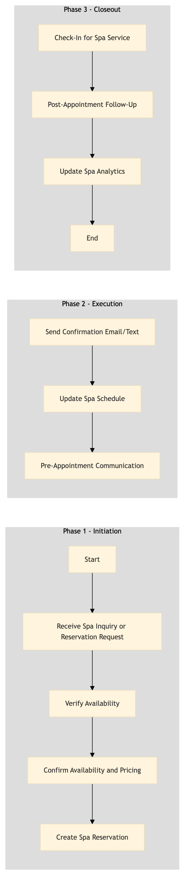

| Role | Steps |
|---|---|
| Front Desk Agent | 1.1 1.3 2.1 2.2 |
| Spa Manager | 1.2 2.3 3.1 3.3 |
| Spa Receptionist | 3.2 |
| Step | Name | Role | System | Input | Output | KPI | Dec? | Exc? | Pain Point / Risk |
|---|---|---|---|---|---|---|---|---|---|
| 1.1 | Receive Spa Inquiry or Reservation Request | Front Desk Agent | Oracle OPERA Cloud | Guest inquiry or reservation request via phone, email, online booking platform, or in-person. | Spa inquiry or reservation request logged in Oracle OPERA Cloud. | Less than 2 minutes per inquiry | Y | N | Handling multiple inquiries simultaneously and ensuring accurate recording of details. |
| 1.2 | Verify Availability | Spa Manager | Oracle OPERA Cloud | Logged spa inquiry or reservation request. | Availability check for requested date and time. | Less than 1 minute per availability check | Y | N | Real-time availability updates across multiple services. |
| 1.3 | Confirm Availability and Pricing | Spa Manager | Oracle OPERA Cloud | Availability check results. | Confirmation of availability and pricing for the requested service. | Less than 1 minute per confirmation | N | Y | Handling last-minute cancellations or changes in availability. |
| 2.1 | Create Spa Reservation | Front Desk Agent | Oracle OPERA Cloud | Confirmed availability and pricing. | Spa reservation created in Oracle OPERA Cloud with all necessary details. | Less than 2 minutes per reservation | N | Y | Ensuring data accuracy during high-volume booking periods. |
| 2.2 | Send Confirmation Email/Text | Front Desk Agent | Oracle OPERA Cloud, Book4Time | Created spa reservation. | Confirmation email or text sent to the guest with appointment details. | Less than 1 minute per confirmation | N | Y | Handling undelivered or bounced emails/texts. |
| 2.3 | Update Spa Schedule | Spa Manager | Oracle OPERA Cloud, Book4Time | Created spa reservation. | Spa schedule updated with the new appointment. | Less than 1 minute per update | N | Y | Ensuring seamless integration between systems for real-time updates. |
| 3.1 | Pre-Appointment Communication | Spa Manager | Oracle OPERA Cloud, Book4Time | Scheduled spa appointment. | Pre-appointment reminder sent to the guest. | Less than 1 minute per communication | N | Y | Handling guests who do not respond or cancel last-minute. |
| 3.2 | Check-In for Spa Service | Spa Receptionist | Oracle OPERA Cloud, Book4Time | Guest arrives at the spa. | Guest check-in completed with all necessary details recorded. | Less than 2 minutes per check-in | N | Y | Handling guests with special requests or dietary restrictions. |
| 3.3 | Post-Appointment Follow-Up | Spa Manager | Oracle OPERA Cloud, Book4Time | Completed spa appointment. | Follow-up survey sent to the guest for feedback. | Less than 1 minute per follow-up | N | Y | Ensuring high response rates and accurate feedback collection. |
| 3.4 | Update Spa Analytics | Revenue Manager | Oracle OPERA Cloud, IDeaS G3 RMS | Completed spa appointment data. | Spa analytics updated with the latest performance metrics. | Less than 1 minute per update | N | Y | Handling large volumes of data and ensuring accurate reporting. |
This process outlines the booking and appointment management for spa services at a full-service Marriott hotel using Oracle OPERA Cloud PMS and other Marriott systems.